화면과 소리,
내가 정하면 안 되나요?
감각 과부하 감소와 미디어 접근성 향상을 위한
적응형 시청 시스템
소리·빛에 민감한 이용자가 같은 장면을 비교해 고른 설정으로 영상을 보고, 크롬에서도 이어서 쓰는 시청 시스템
영상 3편 × 45초 · 크롬 익스텐션 포함
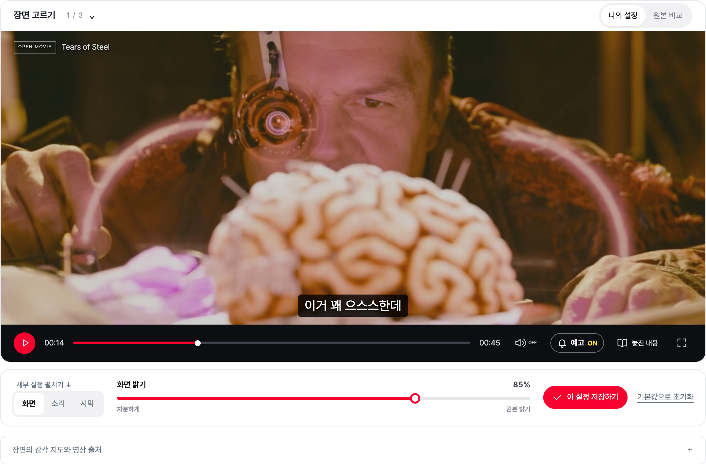
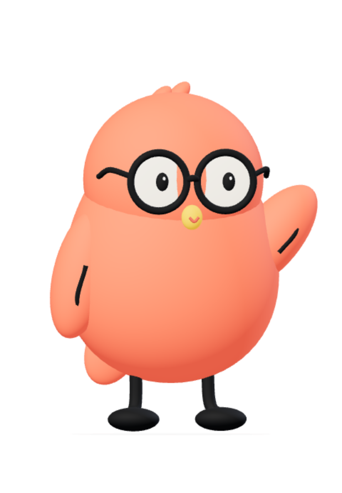
개발 배경 및 필요성
WHY같은 영상, 모두에게 같은 경험일까요?
갑작스러운
음량 변화와 효과음
강한 명도·대비와
빠른 화면 전환
집중 흐름 단절과
정보 처리 부담
사용자 설문조사
기능 만족도
세부 조절 기능 부족
최적화 기술 사용 의향
구글 폼 온라인 설문 · 76명 응답 · 신경다양성 당사자 20%
타깃 사용자
신경다양성 이용자자폐 스펙트럼·ADHD 등
ADHD 진료 26만 명(2024)
감각 민감 이용자빛·소리에 민감한 분
고령층 및 일반 이용자65세 이상 20.3%(2025)
OTT 이용률 79.2%(2024)
논문 11 · 전문 6
편안한 소리와 빛은 사람마다, 그날의 상태마다 달라요
MacLennan et al. 2022 · 자폐 성인 49명감각 환경을 직접 조절한 조건에서 주의집중이 높아졌어요
Unwin et al. 2022 · 아동 41명소리와 빛의 변화를 함께 보여주고, 조절은 사용자가 정해요
Matsuzaki et al. 2022 · 출처 전체는 QRPariView의 핵심 솔루션
HOW · 실제 화면 4단계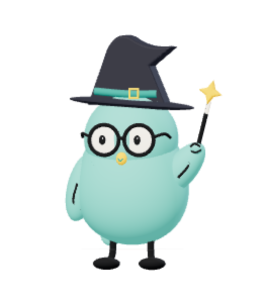
감각 프로필 선택
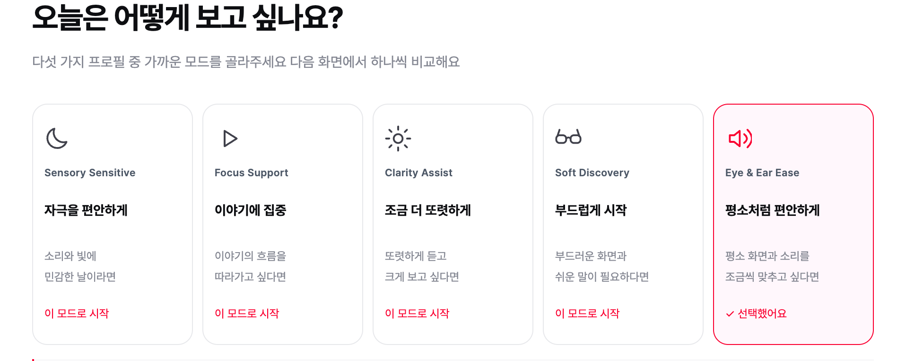
다섯 가지 출발점 중 오늘과 가까운 모드를 골라요
질문 두 개로 추천도 받아요
같은 장면 A/B 비교
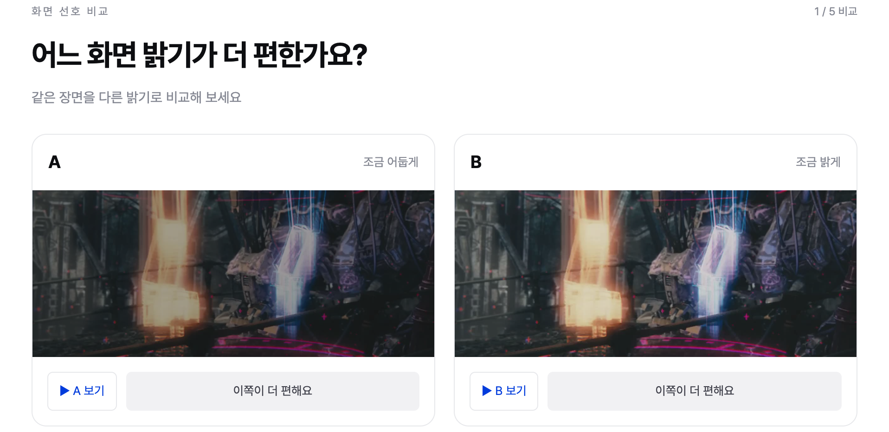
밝기·대비·소리·음량 변화·쉬운 자막을 다섯 번 비교해요
두 화면을 함께 0.75배속으로 볼 수 있어요
맞춤형 시청 환경
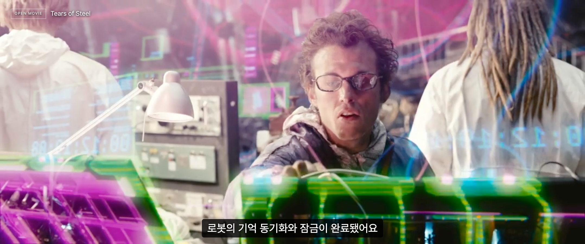
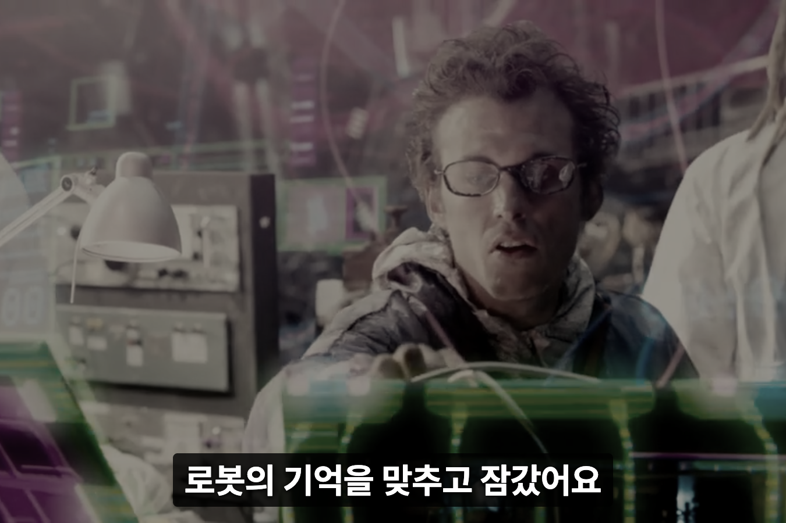
같은 장면을 원본과 맞춤 설정으로 바로 비교해요
영상 아래에서 다시 조절하고 기본값으로 돌아갈 수 있어요
크롬 익스텐션
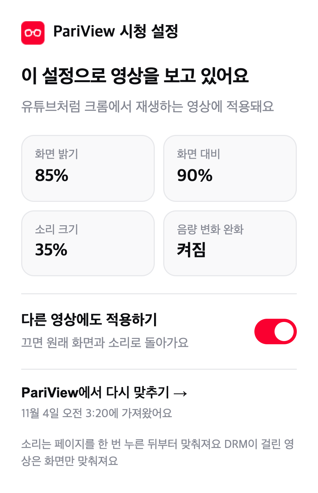
저장한 설정을 크롬 익스텐션이 유튜브 등 지원 영상에 적용해요¹
팝업에서 켜고 끄면 원래 화면으로 돌아가요
5가지 감각 프로필
진단이 아닌 시작점이에요 · 고른 뒤 비교하며 언제든 바꿀 수 있어요학술논문 11편과 전문자료 6건을 검토한 설계 개인차 · 사용자 통제 · 시각 평가 · 소리 내성의 관점을 다섯 가지 시작 설정에 연결했어요
시스템 구조도 및 기술 요소
SYSTEM이어서 보기 저장한 설정 → 크롬 익스텐션(MV3) → 다른 사이트의 지원 영상에 같은 화면·소리 처리¹
장면 데이터 자막·장면 구간(scenes.js) → 자막 표시 · 놓친 내용 탐색²
영상 측정 ffmpeg 라우드니스·밝기 → 장면별 map.json → 감각 지도 · 사전 예고
HTML · CSS · JSThree.js · Anime.js영상 신호로 측정한 감각 지도Tears of Steel 45초 발췌 장면 · 소리 EBU R128 라우드니스 · 빛 프레임 평균 밝기 · 음영 = 변화 구간 · ▲ = 사전 예고
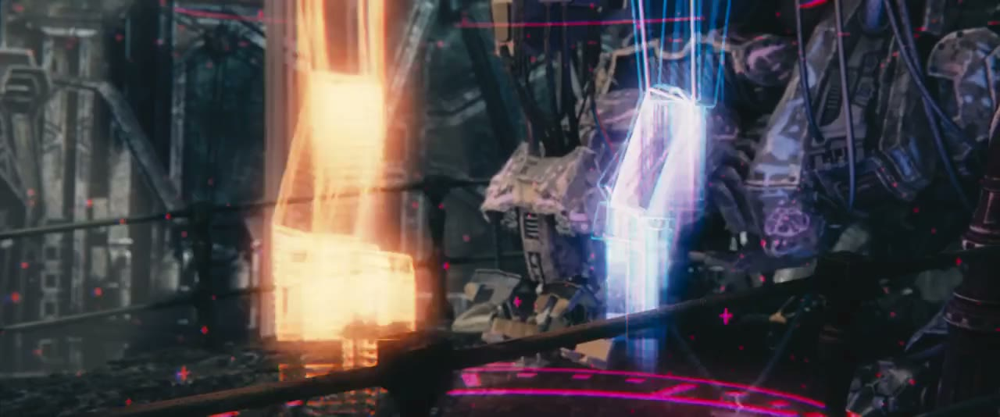
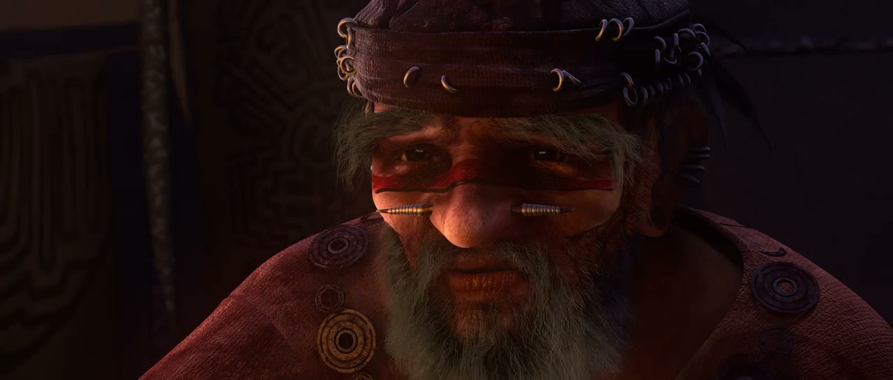
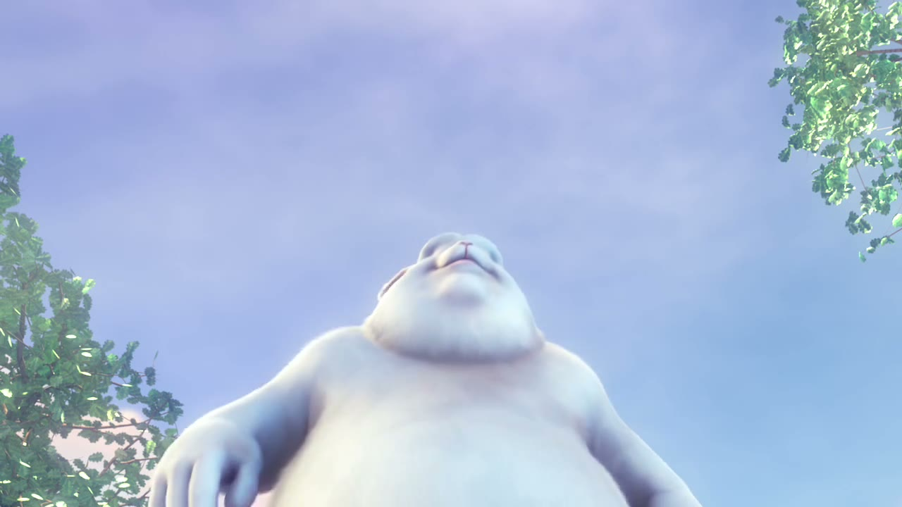
기존 서비스와의 차별점
¹ PC Chrome · 비DRM 및 같은 출처/CORS 허용 소리 소스에 한함 · Netflix 미검증
² 쉬운 자막 · 장면 기록 · 놓친 내용은 데모 영상 3편에 맞춰 미리 작성한 데이터
기대효과 및 향후 발전 방향
유튜브 실측 10 포함
JS·리소스 오류
당사자가 직접 사용해 확인했어요
자동 검증과는 별도로 진행했어요
향후 사용성 평가(SUS) 표준화 · 고른 값 근처에서 한 번 더 비교하는 2단계 비교 · 지원 영상 범위 확대¹